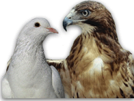

|  |
Hawk and Dove Game Theory Simulation
By Jonathan Asante
|
This is a simulation of the popular Game Theory and Evolutionary Stable Strategy game known as the "The Hawk and Dove Game". As with any other game model, our central question is whether to not DOVE and Hawk can co-exist and if so at what frequency. In this game between two opponents, an individual at each encounter has the alternative to choose whether to play the behaviour of a Hawk or a Dove.
Here is a description of the two alternative behaviours.
Hawk:
- Very aggressive, always fights for some resource.
- Fights between hawks are brutal affairs with the loser being the one who first sustains injury.
- The winner takes sole possession of the resource.
Dove:
- Never fights for a resource. It displays in any conflict and if it is attacked it immediately withdraws before it gets injured.
- In any conflict situation between Dove and Hawk, dove will always lose the resource to a hawk.
- It never gets hurt (never sustains a decrease in fitness) when confronting a hawk, and therefore the interactions are neutral with respect to the dove's fitness.
Pay-Offs:
| | Opponent | |
Focal Strategy | Hawk | Dove |
Hawk | 1/2(V - C)
| V |
Dove | 0 | V/2 |
Assumptions:
- V is equal to the value(V) of the resource which is being contested
- C refers to the cost(C) incurred as a result of the competition for the resource
- Although hawks that lose a contest are injured, the mathematics of the game requires that they not die and in fact are fully mended before their next expected contest.
- All hawks are equal in fighting ability; that is, each hawk has a 50% chance of winning a Hawk - Hawk conflict.
- When two doves face off, each has a 50% chance of winning. Notice that both doves will pay essentially the same display cost in any contest
- The one that either starts first (to physically attack or to display) in any encounter has no knowledge of the strategy that its opponent will play.
References:
- http://college.holycross.edu/faculty/kprestwi/behavior/ESS/HvD_intro.html
Explanation of the Hawks and Doves Game. Kenneth N. Prestwich. College of the Holy Cross 1999.